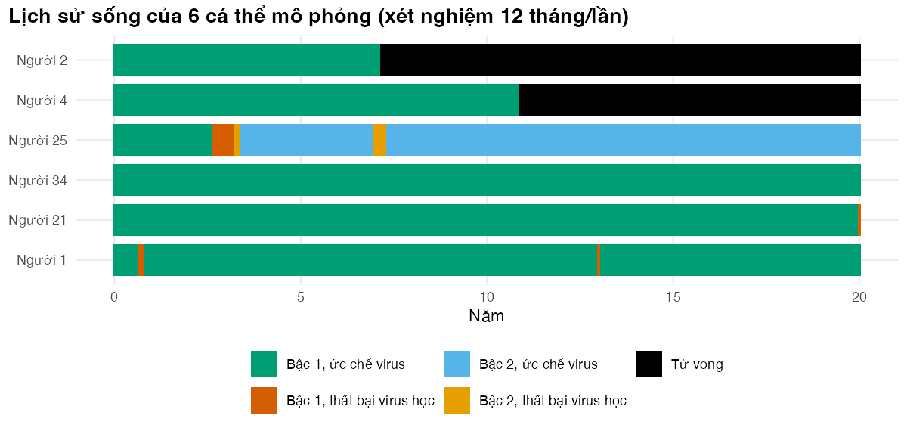

Bài 2: Mô phỏng vi mô bằng vòng lặp trong R cơ bản
Viết từng bước một mô phỏng vi mô có trí nhớ, kiểm tra nó và đọc lịch sử sống của từng người
Vì sao bạn nên quan tâm?
Một người bệnh 41 tuổi lĩnh TLD 3 tháng một lần tại phòng khám ngoại trú. Lần xét nghiệm định kỳ cho tải lượng trên 1,000 bản sao/mL. Theo hướng dẫn quốc gia, chị được tư vấn tăng cường tuân thủ tối đa 3 buổi, xét nghiệm lại sau 3 tháng, và nếu vẫn cao thì chuyển sang AZT + 3TC + LPV/r (Bộ Y tế 2021). Thuốc bậc hai có giá tham chiếu khoảng 6,982,000 VNĐ mỗi năm, gấp 8.5 lần TLD; phần chênh lệch bằng chừng 26 ngày lương tối thiểu vùng I mỗi năm, kéo dài suốt đời (The Global Fund 2026; Chính phủ 2025). Mỗi bước trên phụ thuộc vào lịch sử riêng của chị: đã được tư vấn chưa, còn mấy tháng nữa mới xét nghiệm lại, virus đã kháng thuốc hay chưa. Bài này giúp bạn viết đúng con đường đó thành mã R và kiểm tra được nó, trước khi dùng nó để quyết định lịch xét nghiệm.
Mục tiêu học tập
Sau bài này, bạn có thể:
Viết thuật toán mô phỏng vi mô theo từng người: tạo thuộc tính, lặp qua các chu kỳ, dùng số ngẫu nhiên để quyết định biến cố, cộng dồn chi phí và năm sống điều chỉnh theo chất lượng (QALY).
Mã hóa chuyển trạng thái phụ thuộc lịch sử bằng các biến “trí nhớ” của từng cá thể.
Dùng một số ngẫu nhiên cho các nguy cơ cạnh tranh (competing risks: tử vong, đổi trạng thái virus, kháng thuốc), và dùng chung số ngẫu nhiên khi so sánh hai chiến lược.
Xác minh mô hình bằng các kiểm tra có thể thất bại: bước chuyển hợp lệ, đếm tháng thất bại theo hai cách, quan hệ bao hàm giữa các biến cố.
Đọc lịch sử sống của từng cá thể và vết mô phỏng vi mô.
Ý chính
Mỗi cá thể có thuộc tính cố định (tuổi khi vào, mức tuân thủ) và biến trí nhớ thay đổi theo thời gian (cờ kháng thuốc, số tháng thất bại virus học tích lũy, đồng hồ tư vấn, lịch xét nghiệm).
Mỗi chu kỳ có ba bước theo thứ tự cố định: một biến cố tối đa, cộng giá trị, theo dõi và xử trí. Đổi thứ tự là đổi mô hình.
Tử vong, đổi trạng thái virus và kháng thuốc là nguy cơ cạnh tranh (competing risks): đổi tỷ suất thành xác suất bằng phân rã tỷ suất thoát (M02 Bài 2), rồi dùng một số ngẫu nhiên \(U\) chia đoạn \([0, 1]\).
Dùng chung số ngẫu nhiên (common random numbers): cùng quần thể, cùng ma trận u[người, chu kỳ] rút sẵn cho mọi chiến lược. Chênh lệch khi đó phản ánh chiến lược, không phản ánh may rủi.
Kiểm tra tốt là kiểm tra có thể thất bại; một kiểm tra luôn đúng theo cách tính (hàng của vết cộng bằng \(N\)) không chứng minh gì về mô hình.
Nội dung
Thuật toán
Mô phỏng vi mô dùng hai vòng lặp lồng nhau: ngoài là từng người, trong là từng chu kỳ tháng. Ở mỗi chu kỳ, người đang xét đi qua ba bước.
flowchart TD A["Tạo quần thể: tuổi, mức tuân thủ"] --> B["Người i: đặt trí nhớ về 0<br/>trạng thái S1"] B --> C{"Chu kỳ t:<br/>còn sống?"} C -->|Có| D["1. Một biến cố tối đa, một số ngẫu nhiên U:<br/>chết, đổi trạng thái virus, hoặc kháng thuốc"] D --> F["2. Cộng chi phí, QALY, năm sống<br/>chiết khấu"] F --> G["3. Theo dõi: xét nghiệm, tư vấn,<br/>xét nghiệm lại, chuyển bậc 2"] G --> H{"t < số chu kỳ?"} H -->|Có| C C -->|Không| I["Lưu kết quả người i"] H -->|Không| I I --> J{"Còn người?"} J -->|Có| B J -->|Không| K["Lấy trung bình trên N người"]
flowchart TD
A["Tạo quần thể: tuổi, mức tuân thủ"] --> B["Người i: đặt trí nhớ về 0<br/>trạng thái S1"]
B --> C{"Chu kỳ t:<br/>còn sống?"}
C -->|Có| D["1. Một biến cố tối đa, một số ngẫu nhiên U:<br/>chết, đổi trạng thái virus, hoặc kháng thuốc"]
D --> F["2. Cộng chi phí, QALY, năm sống<br/>chiết khấu"]
F --> G["3. Theo dõi: xét nghiệm, tư vấn,<br/>xét nghiệm lại, chuyển bậc 2"]
G --> H{"t < số chu kỳ?"}
H -->|Có| C
C -->|Không| I["Lưu kết quả người i"]
H -->|Không| I
I --> J{"Còn người?"}
J -->|Có| B
J -->|Không| K["Lấy trung bình trên N người"]
Thuộc tính và trí nhớ
Tuổi khi vào mô hình theo phân phối chuẩn với trung bình 38.2 tuổi (Dat và c.s. 2018) và độ lệch chuẩn 7.0 tuổi, xấp xỉ mức 6.7 suy ra từ khoảng tứ phân vị 36–45 tuổi của khảo sát toàn quốc 2017–2018 (Dat và c.s. 2022) và cùng bậc với 35.4 ± 7.0 tuổi ở một mẫu khác (Tran, Ohinmaa, và Nguyen 2012), cắt trong khoảng 18–70 tuổi. Mức tuân thủ \(a_i\) theo phân phối Beta (giá trị minh họa). Hai thuộc tính này cố định suốt đời mỗi người. Bên cạnh đó, mỗi người mang năm biến trí nhớ: trạng thái hiện tại, cờ kháng thuốc \(R_i \in \{0, 1\}\), số tháng thất bại virus học tích lũy \(V_i\), số tháng tư vấn còn lại, và tháng xét nghiệm định kỳ kế tiếp.
Xác suất chuyển trong một chu kỳ
Mọi tỷ suất trong bảng tham số tính theo năm và được chia cho 12. Với người \(i\) ở tháng \(t\):
Tử vong: \(\mu_i(t) = \mu_{\text{nền}}(\text{tuổi}) + \mu_{\text{HIV}} \cdot (1 + \beta V_i / 12)\), trong đó \(\mu_{\text{nền}}\) lấy theo nhóm tuổi từ bảng sống Việt Nam của WHO (World Health Organization 2026); \(\mu_{\text{HIV}}\) bằng 0.004 khi ức chế virus và 0.04 khi thất bại virus học (mỗi năm), còn \(\beta =\) 0.5 cho mỗi năm thất bại tích lũy (giá trị minh họa). Đây là trí nhớ: hai người cùng ở S1 có nguy cơ tử vong khác nhau nếu quá khứ khác nhau.
Bật lại tải lượng virus (S1 → F1, S2 → F2): \(r(a_i)\) như Bài 1, với \(r_0 =\) 0.009/năm trên bậc một (chọn theo đoàn hệ miền Bắc, Bài 1) và 0.03/năm trên bậc hai (giá trị minh họa).
Tái ức chế virus (F1 → S1): 6.5/năm nhân với \(a_i\), nhân thêm 2 lần trong thời gian tư vấn tăng cường (hệ số này là giá trị minh họa); bằng 0 nếu đã kháng thuốc. Tỷ suất 6.5/năm được chọn để phần lớn người có xét nghiệm lại trên bậc một đã tái ức chế, như ở người dùng TLD trong một nghiên cứu lớn tại Zambia, nơi không ghi nhận được việc tư vấn tăng cường tuân thủ (Sikombe và c.s. 2025); Bài 3 kiểm tra điều này. Trên bậc hai (F2 → S2): 6/năm nhân với \(a_i\) (giá trị minh họa).
Kháng thuốc mắc phải với phác đồ bậc một (ở thời TLD là kháng dolutegravir): chỉ khi đang ở F1 và \(R_i = 0\), với tỷ suất \(\rho =\) 0.12/năm, chọn để tỷ lệ kháng thuốc trong nhóm thất bại virus học gần mức các khảo sát báo cáo cho WHO (Bài 3) (World Health Organization 2024). Người đó ở lại F1 nhưng \(R_i\) chuyển thành 1.
Ở F1 chưa kháng thuốc, ba biến cố loại trừ nhau cùng cạnh tranh: tử vong (\(\mu\)), tái ức chế (\(r\)) và kháng thuốc (\(\rho\)). Kháng thuốc kết thúc khả năng tái ức chế; tái ức chế kết thúc giai đoạn thất bại virus học; ta không biết biến cố nào đến trước trong tháng. Với tổng tỷ suất thoát \(R = \mu + r + \rho\) (mỗi tháng), xác suất mỗi biến cố bằng tỷ suất của nó chia \(R\), nhân \((1 - e^{-R})\). Ta rút một số \(U \sim \text{U}(0, 1)\) và chia \([0, 1]\) thành các đoạn: \(U < p_{\text{chết}}\) thì tử vong; tiếp theo \(p_{\text{đổi}}\) là đổi trạng thái virus; tiếp theo \(p_{\text{kháng}}\) là kháng thuốc; phần còn lại là ở yên. Ở các trạng thái khác, một số hạng nào bằng 0 thì đoạn của nó biến mất.
Quy tắc theo dõi
Hướng dẫn quốc gia hiện hành quy định xét nghiệm tải lượng virus (viral load, VL) sau 6 và 12 tháng điều trị, rồi 12 tháng một lần. Tư vấn tăng cường tuân thủ bắt đầu ngay khi tải lượng trên 50 bản sao/mL, tối đa 3 buổi cách nhau một tháng; thất bại virus học được xác định khi tải lượng trên 1,000 bản sao/mL ở hai lần xét nghiệm cách nhau 3 tháng, và khi đó người bệnh chuyển sang phác đồ bậc hai (Bộ Y tế 2021). Mô hình rút gọn quy trình này: chỉ có một ngưỡng (F1 nghĩa là trên 1,000 bản sao/mL), xét nghiệm định kỳ mỗi \(k\) tháng (\(k\) = 12 theo hướng dẫn, hoặc 6 như một nhánh của thử nghiệm ngẫu nhiên ở Hà Nội (Pollack và c.s. 2019)). Phát hiện thất bại thì tư vấn 3 tháng rồi xét nghiệm lại; vẫn thất bại trên bậc một thì chuyển bậc hai, dù có kháng thuốc hay không. “Chuyển phác đồ không cần thiết” là nhãn riêng của mô hình cho người chuyển khi virus chưa kháng thuốc; ở thời dolutegravir đây là câu hỏi thực tế, vì phần lớn người thất bại virus học không kháng thuốc mà chỉ uống thuốc chưa đều.
Giá trị gắn với trạng thái
Cách tính theo quy ước của M02 Bài 3. Chi phí điều trị (thuốc ARV và khám) trả đầu tháng, nên tính đủ cho ai còn sống ở đầu chu kỳ. Chi phí chăm sóc thêm khi thất bại virus học, giá trị thỏa dụng và năm sống tích lũy dần trong tháng nên dùng quy tắc hình thang (trapezoid rule, trung bình giá trị ở đầu và cuối chu kỳ); chiết khấu tại thời điểm tương ứng. Chi phí xét nghiệm và tư vấn là chi phí sự kiện, tính vào tháng xảy ra. Mọi đơn giá lấy từ bảng giá dùng chung của khóa học, VNĐ năm 2025: thuốc TLD 68,251 VNĐ mỗi tháng (The Global Fund 2026); 4 lượt khám mỗi năm (lĩnh thuốc 3 tháng một lần), mỗi lượt 50,600 VNĐ; một xét nghiệm tải lượng 979,700 VNĐ; một đợt tư vấn bằng 3 lượt khám; ngày giường truyền nhiễm 327,100 VNĐ (Bộ Y tế 2024). Riêng số ngày giường thêm mỗi tháng khi thất bại virus học (1.5) là giá trị minh họa. Giá trị thỏa dụng khi ức chế virus là 0.80, trung bình EQ-5D-5L của 482 người điều trị ARV ở năm phòng khám miền Bắc năm 2017 (Tran và c.s. 2018); bài báo không nêu bộ giá trị và không tách theo tải lượng, nên đây là giá trị gần đúng. Mức giảm khi thất bại virus học, 0.02, là giả định, mượn từ chênh lệch EQ-5D giữa người nhiễm HIV chưa tiến triển và giai đoạn AIDS trong một khảo sát năm 2008 (Tran và c.s. 2011).
Dùng chung số ngẫu nhiên
Để so sánh hai chiến lược, ta cho cùng một quần thể đi qua mỗi chiến lược với cùng một dãy số ngẫu nhiên(Stout và Goldie 2008). Mọi số ngẫu nhiên được rút trước vào ma trận u[i, t], kể cả cho những tháng sau khi người đó đã chết, nên số của người \(i\) ở tháng \(t\) không phụ thuộc vào việc các tháng trước đã rút bao nhiêu số. Người nào có cùng lịch sử ở hai chiến lược cho tới tháng \(t\) sẽ gặp cùng sự kiện ở tháng \(t\); chênh lệch chỉ bắt đầu khi chiến lược thực sự làm thay đổi điều gì đó.
Thực hành
Phần đầu nạp hàm và tham số, đặt số người và hai seed: một cho việc tạo quần thể, một cho các sự kiện. Số người nhỏ có chủ ý vì vòng lặp theo từng người chạy chậm.
if (!isTRUE(l10n_info()[["UTF-8"]])) invisible(Sys.setlocale("LC_CTYPE", "en_US.UTF-8"))source("../_shared/R/helpers.R")source("../_shared/R/vn_data.R") # course-wide values: prices, threshold, life tablesource("code/model.R")library(ggplot2)p <-load_hiv_params() # params/hiv.csv + the shared Vietnamese inputsN_PEOPLE <-500# small on purpose: the loop engine is slow (Lesson 3 makes it fast)SEED_POP <-101# seed for drawing the populationSEED_SIM <-202# seed for the random numbers that drive eventsADH_LOW <-0.80# mean adherence of the poorer-adherence population in Exercise 1
make_population() tạo bảng thuộc tính, mỗi hàng một người. Hãy kiểm tra tuổi nằm trong khoảng cho phép và mức tuân thủ nằm giữa 0 và 1.
# Beta shape parameters from a mean and a concentration (kappa = shape1 + shape2).adherence_beta <-function(p) {c(shape1 = p$adh_mean * p$adh_kappa, shape2 = (1- p$adh_mean) * p$adh_kappa)}# Baseline attributes for n people: age at entry and a fixed personal adherence level.make_population <-function(p, n, seed) {set.seed(seed) age0 <- stats::rnorm(n, p$age_mean, p$age_sd) age0 <-pmin(pmax(age0, p$age_min), p$age_max) ab <-adherence_beta(p) adh <- stats::rbeta(n, ab[["shape1"]], ab[["shape2"]])data.frame(id =seq_len(n), age0 = age0, adh = adh)}
pop <-make_population(p, N_PEOPLE, seed = SEED_POP)head(pop, 4)
Hàm transition_probs() là trái tim của mô hình. Nó nhận trạng thái và trí nhớ của một hay nhiều người rồi trả về ba xác suất trong một tháng: tử vong, đổi trạng thái virus, kháng thuốc. Đọc kỹ dòng mu_hiv: số tháng thất bại tích lũy cum_vir đi thẳng vào nguy cơ tử vong. Ba xác suất dùng chung một tổng tỷ suất total.
# Annual background death rate: the Vietnamese life table (step function over age groups,# the same rule as vn_mx() in ../_shared/R/vn_data.R, but without re-reading the file).bg_mortality <-function(age, p) p$lt_mx[findInterval(age, p$lt_age)]# Annual rate of viral rebound: multiplied by hr_adh10 for every 10 points of lost adherence.rebound_rate <-function(adh, base, p) base * p$hr_adh10^(10* (1- adh))# Monthly probabilities of three mutually exclusive events, for one person or for a whole# vector of people: death, change of viral state, and acquired resistance (only in state F1# and only if not yet resistant). Inputs: current state (1-5), adherence, age, resistance# flag (0/1), months lived with unsuppressed virus (cum_vir), months left in enhanced# adherence counselling (eac). The three events are competing risks: they share one total# exit rate, and each gets its share of the probability of leaving the state (M02 Lesson 2).transition_probs <-function(state, adh, age, res, cum_vir, eac, p) { viremic <- state ==2L | state ==4L mu_hiv <-ifelse(viremic, p$mu_vir, p$mu_supp) * (1+ p$vir_slope * cum_vir /12) death <- (bg_mortality(age, p) + mu_hiv) /12 boost <-ifelse(eac >0, p$hr_eac, 1) move <-ifelse(state ==1L, rebound_rate(adh, p$r_reb1, p),ifelse(state ==2L, (1- res) * p$r_resup1 * adh * boost,ifelse(state ==3L, rebound_rate(adh, p$r_reb2, p), p$r_resup2 * adh * boost))) /12 adr <-ifelse(state ==2L & res ==0, p$r_adr, 0) /12 total <- death + move + adr p_exit <-rate_to_prob(total) p_die <- death / total * p_exit p_move <- move / total * p_exit p_adr <- adr / total * p_exit dead <- state ==5L p_die[dead] <-0 p_move[dead] <-0 p_adr[dead] <-0list(die = p_die, move = p_move, adr = p_adr)}
Ba người cùng ở S1, cùng tuổi. A và C có cùng mức tuân thủ, nhưng C đã từng sống một thời gian với virus không ức chế. Điểm kiểm tra xác nhận C có nguy cơ tử vong cao hơn A và B có nguy cơ bật lại cao hơn A.
# Three people in the SAME state (first line, suppressed) at age 40.# A and C have the same adherence; C has lived 24 months with unsuppressed virus before.demo <-data.frame(person =c("A", "B", "C"), adh =c(0.95, 0.70, 0.95), cum_vir =c(0, 0, 24))pr <-transition_probs(state =rep(1L, 3), adh = demo$adh, age =40, res =0,cum_vir = demo$cum_vir, eac =0, p = p)demo$p_die_month <- pr$diedemo$p_rebound_month <- pr$movedemo[, 4:5] <-round(demo[, 4:5], 5)demo
person adh cum_vir p_die_month p_rebound_month
1 A 0.95 0 0.00055 0.00106
2 B 0.70 0 0.00055 0.00598
3 C 0.95 24 0.00088 0.00106
C mang 24 tháng thất bại virus học tích lũy. Xác suất tử vong mỗi tháng của C là 0.00088, so với 0.00055 của A. Trong mô hình đoàn hệ, hai người này nằm chung một ô và không thể phân biệt.
Giá trị của từng trạng thái nằm trong state_values(), gồm chi phí điều trị trả đầu tháng, chi phí thêm khi thất bại virus học, thỏa dụng và năm sống.
Xem hàm state_values()
# Value of being in each state for one month (cost, VND) or one year (utility, alive).# Same two conventions as M02 Lesson 3: treatment cost (ARV drugs + clinic visits) is paid# at the start of the month, so it is charged in full to anyone alive in that state at the# start; the extra care while viraemic, the utility and the life-years accrue over the# month and use the trapezoid rule (mean of the values at the start and end of the cycle).# first line: TLD price / 12; second line: USD price per year x exchange rate / 12# visits: outpatient visit price x visits per year / 12 (90-day refills when stable)# extra care while viraemic: bed-days per month x bed-day pricestate_values <-function(p) { c_visit <- p$c_visit_unit * p$visits_per_year /12 c_art2 <- p$art2_usd_year * p$fx /12 c_vir <- p$vir_beddays_month * p$c_bedday u_vir <- p$u_supp - p$u_vir_declist(cost_tx =c(p$c_art1 + c_visit, p$c_art1 + c_visit, c_art2 + c_visit, c_art2 + c_visit, 0),cost_vir =c(0, c_vir, 0, c_vir, 0),utility =c(p$u_supp, u_vir, p$u_supp, u_vir, 0),alive =c(1, 1, 1, 1, 0) )}# Shared set-up for every engine. One episode of enhanced adherence counselling (EAC) costs# eac_sessions outpatient visits; it is charged when a high viral load is detected.sim_setup <-function(p, strategy) { n_cycles <- p$horizon_years *12list(n_cycles = n_cycles,intervals =strategy_intervals(p, strategy),v =state_values(p),c_eac = p$eac_sessions * p$c_visit_unit,disc_start =discount_weights((seq_len(n_cycles) -1) /12, p$disc_rate),disc_mid =discount_weights((seq_len(n_cycles) -0.5) /12, p$disc_rate),disc_end =discount_weights(seq_len(n_cycles) /12, p$disc_rate) )}
Đây là toàn bộ bộ máy vòng lặp. Vòng ngoài duyệt từng người, vòng trong duyệt từng tháng và dừng khi người đó tử vong. Ba bước trong vòng trong khớp với sơ đồ ở trên.
Xem hàm run_microsim_loop()
# Engine 1: one person at a time, one cycle at a time (easy to read, slow).# u is a matrix [person, cycle] of uniform random numbers drawn in advance: u[i, t] decides# which event (if any) happens to person i in cycle t. Cycle t uses column t of u.run_microsim_loop <-function(p, pop, strategy, seed) { s <-sim_setup(p, strategy) n <-nrow(pop)set.seed(seed) u <-matrix(stats::runif(n * s$n_cycles), n, s$n_cycles) states <-matrix(5L, n, s$n_cycles +1) # state history, filled with "dead" f1_res <-integer(s$n_cycles +1) # people in F1 with resistance, by month out <-data.frame(cost =numeric(n), qaly =numeric(n), ly =numeric(n),ly_undisc =numeric(n), months_vir =numeric(n), res =logical(n),switched =logical(n), unnecessary =logical(n),n_vl =numeric(n), n_eac =numeric(n), n_rep1 =numeric(n))for (i inseq_len(n)) {# Attributes and memory of person i state <-1L; res <-0L; cum_vir <-0; eac <-0; ever_flag <-FALSE next_test <- s$intervals[["first"]] cost <-0; qaly <-0; ly <-0; ly_undisc <-0; n_vl <-0; n_eac <-0; n_rep1 <-0 switched <-FALSE; unnecessary <-FALSE states[i, 1] <- statefor (t inseq_len(s$n_cycles)) {if (state ==5L) break# 1. One event at most: death, change of viral state, or acquired resistance pr <-transition_probs(state, pop$adh[i], pop$age0[i] + (t -1) /12, res, cum_vir, eac, p) new_state <- stateif (u[i, t] < pr$die) { new_state <-5L } elseif (u[i, t] < pr$die + pr$move) { new_state <- NEXT_VIRAL_STATE[state] } elseif (u[i, t] < pr$die + pr$move + pr$adr) { res <-1L # stays in F1, now resistant }# 2. Rewards: treatment cost at the start of the cycle; the rest by the trapezoid rule cost <- cost + s$v$cost_tx[state] * s$disc_start[t] + (s$v$cost_vir[state] + s$v$cost_vir[new_state]) /2* s$disc_mid[t] qaly <- qaly + (s$v$utility[state] + s$v$utility[new_state]) /2/12* s$disc_mid[t] ly_t <- (s$v$alive[state] + s$v$alive[new_state]) /2/12 ly <- ly + ly_t * s$disc_mid[t] ly_undisc <- ly_undisc + ly_t cum_vir <- cum_vir + (state ==2L || state ==4L) state <- new_state# 3. Monitoring at the end of the cycleif (state !=5L) { tested <-FALSE; detected <-FALSEif (eac >0) { eac <- eac -1if (eac ==0) { # repeat test after counselling tested <-TRUEif (state ==1L || state ==2L) n_rep1 <- n_rep1 +1if (state ==2L) { # still failing on first line: switch state <-4L switched <-TRUEif (res ==0) unnecessary <-TRUE } next_test <- t + s$intervals[["after"]] } } elseif (t >= next_test) { # routine test tested <-TRUEif (state ==2L || state ==4L) { detected <-TRUE eac <- p$eac_months ever_flag <-TRUE } else { next_test <- t +if (ever_flag) s$intervals[["after"]] else s$intervals[["first"]] } } n_vl <- n_vl + tested n_eac <- n_eac + detected cost <- cost + (tested * p$c_vl + detected * s$c_eac) * s$disc_end[t] } states[i, t +1] <- stateif (state ==2L && res ==1L) f1_res[t +1] <- f1_res[t +1] +1L } out[i, ] <-list(cost, qaly, ly, ly_undisc, cum_vir, res ==1, switched, unnecessary, n_vl, n_eac, n_rep1) } trace <-t(apply(states, 2, tabulate, nbins =5))storage.mode(trace) <-"integer"dimnames(trace) <-list(0:s$n_cycles, STATES)list(indiv = out, trace = trace, f1_res = f1_res, states = states, strategy = strategy)}
Ta chạy chiến lược xét nghiệm 12 tháng/lần cho 500 người và đo thời gian. Kết quả gồm bảng kết cục từng người, vết mô phỏng và ma trận lịch sử trạng thái (người × chu kỳ).
Vòng lặp mất 2.2 giây cho 500 người. Trước khi đọc kết quả, ta xác minh mô hình. Kiểm tra 0 chỉ là phép cộng số học nên chỉ bắt được lỗi ở chính phép cộng. Các kiểm tra 1 đến 5 có thể thất bại nếu mã sai: mọi bước chuyển giữa hai tháng liên tiếp phải là mũi tên của sơ đồ mô hình; số tháng thất bại virus học đếm theo hai cách độc lập phải bằng nhau; chỉ người đã chuyển phác đồ mới ở bậc hai, và mỗi lần chuyển phải đi sau một lần xét nghiệm lại trên bậc một; các quan hệ bao hàm và miền giá trị phải đúng.
tr <- sim12$tracest <- sim12$statesind <- sim12$indivn_cycles <-ncol(st) -1# (0) Arithmetic only: the trace counts a complete matrix, so each row sums to N by construction.# This cannot fail unless the code that sums is wrong; it is not a check of the model.check_trace(tr / N_PEOPLE)# (1) Every move between consecutive months must be an arrow of the model diagram.# S1 -> F2 is possible in one month: rebound in the last month of counselling, then switch.from <- st[, 1:n_cycles]to <- st[, 2:(n_cycles +1)]moves_seen <-table(from =factor(from, levels =1:5, labels = STATES),to =factor(to, levels =1:5, labels = STATES))allowed <-matrix(0, 5, 5, dimnames =list(STATES, STATES))allowed[cbind(c("S1", "S1", "S1", "S1", "F1", "F1", "F1", "F1", "S2", "S2", "S2","F2", "F2", "F2", "D"),c("S1", "F1", "F2", "D", "F1", "S1", "F2", "D", "S2", "F2", "D","F2", "S2", "D", "D"))] <-1moves_seen
to
from S1 F1 S2 F2 D
S1 207859 359 0 0 476
F1 336 583 0 17 6
S2 0 0 3647 50 17
F2 0 0 67 121 0
D 0 0 0 0 206462
stopifnot(all(moves_seen[allowed ==0] ==0))# (2) Months with unsuppressed virus, counted two ways: by the model's memory variable and# by counting cycles that started in F1 or F2 in the stored historystopifnot(all(ind$months_vir ==rowSums(from ==2L | from ==4L)))# (3) Line 2 only after a switch; a switch needs a detection, two tests and a repeat test# on first line; there is never more than one repeat test per detectionon_line2 <-rowSums(st ==3L | st ==4L) >0stopifnot(identical(on_line2, ind$switched),all(ind$n_eac[ind$switched] >=1), all(ind$n_vl[ind$switched] >=2),all(ind$n_rep1 >= ind$switched), all(ind$n_rep1 <= ind$n_eac))# (4) Logical inclusions: an "unnecessary" switch is a switch; resistance needs viraemia;# resistant people in F1 cannot outnumber people in F1stopifnot(all(ind$unnecessary <= ind$switched), all(ind$months_vir[ind$res] >0),all(sim12$f1_res <= tr[, "F1"]))# (5) Value rangesstopifnot(all(ind$cost >=0), all(ind$qaly <= ind$ly +1e-12))alive_end <-1- tr[nrow(tr), "D"] / N_PEOPLEalive_end
[1] 0.002
Mọi kiểm tra đều qua. Bảng đếm có 420,000 cặp người-tháng. Bước S1 → F2 trong một tháng là hợp lệ (bật lại đúng tháng cuối của đợt tư vấn rồi bị chuyển) nhưng hiếm: với 500 người ở đây nó không xảy ra lần nào. Cuối khung thời gian, 0.2% số người còn sống, nghĩa là khung 70 năm gần như trọn đời. Kiểm tra mạnh nhất, quy mô phỏng vi mô về mô hình đoàn hệ, cần quần thể lớn nên để dành cho Bài 3.
Hình lịch sử sống cho thấy điều mà mô hình đoàn hệ không thể hiện: mỗi người có một con đường riêng. Đoạn mã chọn người ức chế virus suốt, người chuyển bậc hai vì kháng thuốc, người chuyển bậc hai dù chưa kháng thuốc, và người thất bại rồi tự tái ức chế (nếu quần thể nhỏ không có ai thuộc một nhóm, nhóm đó bị bỏ qua).
# Life histories of six people: first 20 yearsind <- sim12$indivpick <-c(which(!ind$switched & ind$months_vir ==0)[1:2],which(ind$switched &!ind$unnecessary)[1:2],which(ind$unnecessary)[1],which(!ind$switched & ind$months_vir >0)[1])pick <- pick[!is.na(pick)]n_pick <-length(pick)months <-0:240hist_df <-data.frame(person =factor(rep(paste("Người", pick), each =length(months)),levels =rev(paste("Người", pick))),month =rep(months, times =length(pick)),state =factor(STATES[as.vector(t(sim12$states[pick, months +1]))], levels = STATES,labels = STATE_LABELS))fig_hist <-ggplot(hist_df, aes(month /12, person, fill = state)) +geom_tile(height =0.8) +scale_fill_manual(values = pal_course[c(3, 2, 5, 4, 8)], name =NULL, drop =FALSE) +labs(x ="Năm", y =NULL, title =paste0("Lịch sử sống của ", n_pick, " cá thể mô phỏng (xét nghiệm ", p$vl_soc, " tháng/lần)")) +theme_course() +guides(fill =guide_legend(nrow =2))save_fig(fig_hist, "l02-histories.png", width =8, height =3.8)

Lịch sử sống của 6 cá thể mô phỏng trong 20 năm đầu, chiến lược xét nghiệm 12 tháng/lần.
Cộng dồn các lịch sử sống theo từng tháng cho ta vết mô phỏng vi mô, tương đương vết đoàn hệ ở M02. Bảng in ra tỷ lệ ở mỗi trạng thái tại một số tháng; mỗi hàng phải cộng lại bằng 1.
# Microsimulation trace: share of the simulated people in each state, by monthshare <- tr / N_PEOPLEmonth_show <-120# the month used in the text below the tableround(share[c("0", "12", "60", as.character(month_show), "240"), ], 3)
# Does the 95% Monte Carlo interval (+-1.96 SE) of each paired difference contain 0?has0 <-function(est, se) abs(est) <1.96* seci0_l02 <-c(cost =has0(diff_l02$d_cost, diff_l02$se_cost),qaly =has0(diff_l02$d_qaly, diff_l02$se_qaly),nmb =has0(diff_l02$d_nmb, diff_l02$se_nmb))ci0_l02
cost qaly nmb
FALSE TRUE FALSE
# How much of the extra cost is testing? Cost is linear in the test price: rerun both# strategies with free tests (same people, same random numbers) and compare the cost difference.p_free <- pp_free$c_vl <-0d_free <-paired_diff(list(vl12 =run_microsim_loop(p_free, pop, "vl12", seed = SEED_SIM),vl6 =run_microsim_loop(p_free, pop, "vl6", seed = SEED_SIM)), wtp = p$wtp)share_test_cost <-1- d_free$d_cost / diff_l02$d_costround(c(share_of_extra_cost_that_is_testing = share_test_cost), 3)
share_of_extra_cost_that_is_testing
0.986
# Statements used in the lesson text (update the text if a check fails)stopifnot(res_l02["vl6", "months_vir"] < res_l02["vl12", "months_vir"], res_l02["vl6", "n_vl"] > res_l02["vl12", "n_vl"], share_test_cost >0.8, # the extra cost is mostly testing!ci0_l02[["cost"]], ci0_l02[["qaly"]], # cost sign is clear, QALY sign is notabs(p$wtp * diff_l02$d_qaly) <abs(diff_l02$d_cost)) # the NMB difference is driven by cost
Xét nghiệm 6 tháng/lần làm số tháng thất bại virus học trung bình giảm từ 2.3 xuống 1.9 tháng, nhưng tăng số xét nghiệm suốt đời từ 35.2 lên 70.7 lần mỗi người. Hai loại chênh lệch cư xử rất khác nhau khi chỉ có 500 người. Chênh lệch chi phí là 20.56 triệu VNĐ mỗi người, sai số Monte Carlo (Monte Carlo error) chỉ 0.49 triệu VNĐ: khoảng 99% trong đó là tiền xét nghiệm (chạy lại với xét nghiệm miễn phí), ai còn sống cũng phải trả, nên dấu đã rõ. Chênh lệch năm sống điều chỉnh theo chất lượng (QALY) là -0.0112, sai số 0.0081; khoảng ±1.96 sai số chứa 0, và ước lượng thậm chí âm, tức xét nghiệm dày hơn có vẻ làm hại sức khỏe: đó là nhiễu, không phải tác dụng. Lợi ích sức khỏe của việc xét nghiệm dày hơn chỉ đến với số ít người có đợt thất bại virus học được phát hiện sớm hơn, nên 500 người là quá ít để thấy nó. Ở ngưỡng 1 × GDP bình quân đầu người, chênh lệch lợi ích ròng quy ra tiền (net monetary benefit, NMB) là -21.96 triệu VNĐ (sai số 1.19 triệu VNĐ), bị chi phí xét nghiệm chi phối. Bài 3 làm mô hình chạy nhanh để mô phỏng nhiều người hơn, và Bài 5 trả lời câu hỏi “bao nhiêu người là đủ” cho từng loại chênh lệch.
Mẹo thực hành
Viết hàm xác suất chuyển nhận được cả số lẻ lẫn vectơ, như transition_probs(). Vòng lặp, bản vectơ hóa và các kiểm tra đơn lẻ khi đó dùng chung một công thức.
Lưu ma trận lịch sử trạng thái khi phát triển mô hình với số người nhỏ, và đặt seed quần thể và seed sự kiện riêng, để đổi được từng thứ.
Vẽ lịch sử sống của vài người trước khi xem kết quả trung bình. Những lỗi logic như chuyển bậc hai mà không qua xét nghiệm lại lộ ra ngay trên hình.
Lỗi thường gặp
Rút số ngẫu nhiên “khi cần” trong vòng lặp, ví dụ chỉ rút khi người đó còn sống. Hai chiến lược khi đó lệch dãy số ngay sau sự kiện đầu tiên khác nhau, và lợi ích của việc dùng chung số ngẫu nhiên mất đi.
Dùng nhiều số ngẫu nhiên độc lập cho các nguy cơ cạnh tranh, hoặc xét một biến cố trước bằng số riêng rồi để nó chặn biến cố kia trong cùng tháng (ví dụ kháng thuốc xét trước và chặn tái ức chế). Như vậy hai nguy cơ cạnh tranh thành nối tiếp, xác suất lệch nhiều khi chu kỳ dài so với tỷ suất. Dùng một số \(U\) cho các sự kiện loại trừ nhau.
Cập nhật trí nhớ sai thời điểm, ví dụ cộng tháng thất bại sau khi đã đổi trạng thái. Ghi rõ thứ tự các bước trong chú thích mã.
Quên rằng người chết vẫn chiếm chỗ trong ma trận số ngẫu nhiên. Đó là chủ đích, không phải lãng phí.
Bài tập
(Dễ) Tạo một quần thể có tuân thủ trung bình 0.8 thay vì 0.9. So sánh số tháng thất bại virus học, tỷ lệ kháng thuốc, tỷ lệ chuyển bậc hai và số năm sống với quần thể gốc.
(Vừa) Chạy chiến lược bậc thang vl12_then6: xét nghiệm 12 tháng/lần, rút xuống 6 tháng/lần sau lần đầu phát hiện thất bại. Chiến lược này nằm ở đâu giữa hai chiến lược chính về chi phí, QALY và số xét nghiệm? Vì sao mô hình đoàn hệ khó mã hóa chiến lược này? (Đây không phải nhánh “xét nghiệm có mục tiêu” của thử nghiệm Hà Nội (Pollack và c.s. 2019), vốn chỉ xét nghiệm tải lượng khi có thất bại lâm sàng hoặc miễn dịch.)
(Khó) Những ai bị chuyển phác đồ không cần thiết trong chiến lược 6 tháng/lần? So sánh mức tuân thủ của họ với những người còn lại và giải thích cơ chế.
Lời giải
Bài 1. Chỉ cần đổi một tham số và tạo lại quần thể với cùng seed:
Tuân thủ kém hơn làm số tháng thất bại virus học tăng gấp khoảng 2.8 lần và số năm sống giảm. Đây là ảnh hưởng của không đồng nhất lên kết cục trung bình.
Bài 2. Chiến lược bậc thang cần nhớ “người này đã từng bị phát hiện thất bại chưa”. Trong mô phỏng vi mô đó chỉ là một biến ever_flag. Trong mô hình đoàn hệ, mọi trạng thái phải nhân đôi.
# Exercise 2: the step-up strategy (12-monthly, then 6-monthly after a first detected failure)sim_tg <-run_microsim_loop(p, pop, "vl12_then6", seed = SEED_SIM)round(rbind(vl12 =summarise_sim(sim12), vl12_then6 =summarise_sim(sim_tg),vl6 =summarise_sim(sim6))[, c("cost", "qaly", "n_vl", "p_switch")], 3)
Bài 3. So sánh mức tuân thủ của người bị chuyển không cần thiết với những người còn lại:
# Exercise 3: who is switched without resistance? Compare their adherence with the restunn <- sim6$indiv$unnecessaryround(c(n_unnecessary =sum(unn), n_switched =sum(sim6$indiv$switched),adh_unnecessary =mean(pop$adh[unn]), adh_others =mean(pop$adh[!unn])), 3)
stopifnot(sum(unn) >=3, # enough people to comparemean(pop$adh[unn]) <mean(pop$adh[!unn]),sum(sim6$indiv$unnecessary) >sum(sim12$indiv$unnecessary))
Người bị chuyển không cần thiết có tuân thủ trung bình 83.7%, thấp hơn mức 90.8% của những người còn lại. Virus của họ chưa kháng thuốc nhưng họ không tái ức chế kịp trong 3 tháng tư vấn. Với phác đồ có dolutegravir, kháng thuốc hiếm, nên trong chiến lược 6 tháng/lần có 12 trên 20 lần chuyển bậc hai là không cần thiết theo định nghĩa của mô hình. Xét nghiệm dày hơn phát hiện nhiều đợt thất bại thoáng qua hơn, nên cũng tạo ra nhiều lần chuyển không cần thiết hơn (12 so với 9 ở chiến lược 12 tháng/lần, cùng 500 người). Đây là lý do thực hành hiện nay nhấn mạnh tư vấn tuân thủ trước khi đổi phác đồ.
Dat, Vu Quoc, Nguyen Thi Lan Anh, Khuu Van Nghia, Nguyen Thuy Linh, Huynh Hoang Khanh Thu, Tran Thi Minh Tam, Tran Ton, và c.s. 2022. “The prevalence of pre-treatment and acquired HIV drug resistance in Vietnam: a nationally representative survey, 2017–2018”. Journal of the International AIDS Society 25 (2): e25857. https://doi.org/10.1002/jia2.25857.
Dat, Vu Quoc, Bui Duc Duong, Do Thi Nhan, Nguyen Huu Hai, Nguyen Thi Lan Anh, Huynh Hoang Khanh Thu, Tran Ton, và c.s. 2018. “Viral load suppression and acquired HIV drug resistance in adults receiving antiretroviral therapy in Viet Nam: results from a nationally representative survey”. Western Pacific Surveillance and Response Journal 9 (3): 16–24. https://doi.org/10.5365/wpsar.2018.9.1.008.
Pollack, Todd M., Hao T. Duong, Thuy T. Pham, Thang D. Nguyen, Howard Libman, Long Ngo, James H. McMahon, Julian H. Elliott, Cuong D. Do, và Donn J. Colby. 2019. “Routine versus targeted viral load strategy among patients starting antiretroviral in Hanoi, Vietnam”. Journal of the International AIDS Society 22 (3): e25258. https://doi.org/10.1002/jia2.25258.
Sikombe, Kombatende, Noelle Le Tourneau, Brian Rice, Jake M. Pry, Sandra Simbeza, Laura K. Beres, Anjali Sharma, và c.s. 2025. “Identifying care gaps along the HIV treatment failure cascade: A multistate analysis of viral load monitoring, re-suppression, and regimen switches in Zambia”. PLoS Medicine 22 (9): e1004720. https://doi.org/10.1371/journal.pmed.1004720.
Stout, Natasha K., và Sue J. Goldie. 2008. “Keeping the noise down: common random numbers for disease simulation modeling”. Health Care Management Science 11 (4): 399–406. https://doi.org/10.1007/s10729-008-9067-6.
Tran, Bach Xuan, Anh Kim Dang, Nu Thi Truong, Giang Hai Ha, Huong Lan Thi Nguyen, Ha Ngoc Do, Tuan Quoc Nguyen, Carl A. Latkin, Cyrus S. H. Ho, và Roger C. M. Ho. 2018. “Depression and Quality of Life among Patients Living with HIV/AIDS in the Era of Universal Treatment Access in Vietnam”. International Journal of Environmental Research and Public Health 15 (12): 2888. https://doi.org/10.3390/ijerph15122888.
Tran, Bach Xuan, Arto Ohinmaa, và Long Thanh Nguyen. 2012. “Quality of life profile and psychometric properties of the EQ-5D-5L in HIV/AIDS patients”. Health and Quality of Life Outcomes 10: 132. https://doi.org/10.1186/1477-7525-10-132.
Tran, Bach Xuan, Arto Ohinmaa, Long Thanh Nguyen, Thu Anh Nguyen, và Thao Huong Nguyen. 2011. “Determinants of health-related quality of life in adults living with HIV in Vietnam”. AIDS Care 23 (10): 1236–45. https://doi.org/10.1080/09540121.2011.555749.